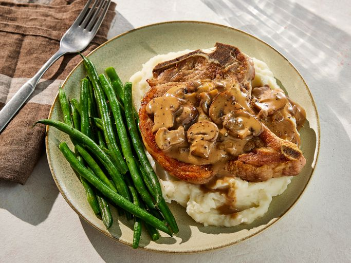

Mushroom Pork Chops
Home

Description
These pork chops with cream of mushroom soup are quick and easy, but very delicious. This is one of my family's favorite dinners served with brown rice.
Ingredients
- 4 pork chops
- salt and ground black pepper to taste
- 1 pinch garlic salt, or to taste
- ½ pound fresh mushrooms, slices
- 1 onion, chopped
- 1 (10.5 ounce) can condensed cream of mushroom soup
Steps
- Gather all ingredients.
- Season pork chops with salt, pepper, and garlic salt.
- Brown chops on both sides over medium-high heat in a large nonstick skillet; transfer browned chops to a plate.
- Add mushrooms and onion to the same skillet and sauté for one minute.
- Arrange browned chops on top of mushroom mixture. Pour soup over chops. Cover, reduce the heat to medium-low, and simmer until chops are cooked through and no longer pink in the center, 20 to 30 minutes. An instant-read thermometer inserted into the center should read 145 degrees F (63 degrees C).
- Serve and enjoy!